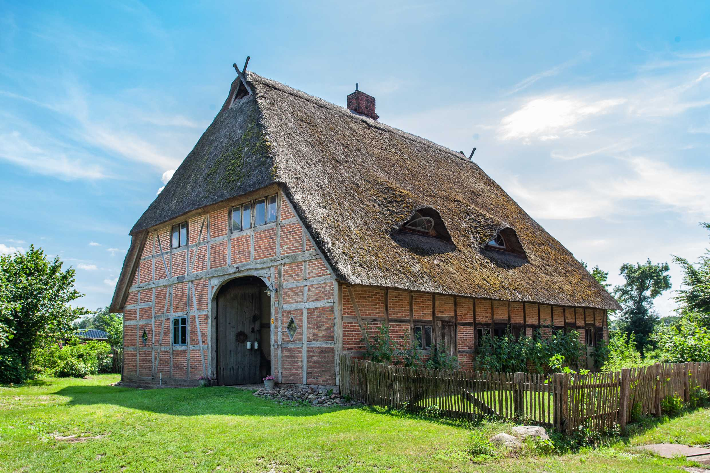

Dorfstraße 6a, 21483 Kruzen, Germany
Die Scheune wurde 1890 erbaut und diente ursprünglich als Behausung fürs Vieh. In den 90er Jahren wurde die Scheune reetgedeckt und zum Wohnhaus im alten Stil umgebaut. Heute bietet sie uns als Familie genug Platz zum Leben und Arbeiten.
Für 1-2 Personen, 30m²
Das Schlafen in einem Alkoven (Bettnische) ist ein einmaliges Erlebnis, welches du in unserer Ferienwohnung findest. Unsere stilvoll eingerichtete Ferienwohnung soll euch auf eurer Reise als Rückzugsort dienen. Sie bietet alles, was man für einen kurzen Aufenthalt braucht.
Willkommen in unserem schönen Reetdachhaus! Übernachte in einem der authentischsten Häuser der Region und entfliehe der Stadt, um die Natur zu genießen. Egal, ob du dich entspannen, durch die Wiesen wandern oder an der Elbe entlang radeln willst, hier findest du, was du brauchst. Wir befinden uns in der Nähe der schönen Altstadt von Lauenburg, wo du dich bei einem Spaziergang durch historische Fachwerkarchitektur in eine frühere Zeit zurückversetzen kannst. Wir wohnen auch im Haus, aber wir werden dir immer deine Privatsphäre lassen. Du wirst deinen eigenen Bereich haben, der komplett eingerichtet ist und alles hat, was du brauchst, um eine gute Zeit zu haben, eine Kleinigkeit zu kochen und gut zu schlafen. Wir freuen uns auf deinen Besuch!
Die kleine Küche eignet sich prima zur Zubereitung kleiner Speisen und Getränke. Besteck und Geschirr stehen bereit.
Die Küchenzeile bietet ein Induktionskochfeld und einen Kühlschrank mit Gefrierfach.Kochbasics wie Öl, Salz und Pfeffer sind vorhanden.
Eine Nespressomaschine mit ein paar Kapseln sorgt für den Kaffee am Morgen.
Es stehen zwei Schlafmöglichkeiten zur Verfügung. Zum einen der Alkoven. Dieser ist mit einer 120x210cm Matratze ausgestattet und birgt die ultimative Gemütlichkeit.
Außerdem lässt sich das Sofa in ein komfortables 140x200cm Bett verwandeln. Mit dem vorhandenen Topper von Snooze Project wird es umso gemütlicher.
Für jeden Gast liegen bezogene Bettsachen (1 Kissen 80x80cm und Bettdecke 135x200cm) bereit.
Die hochwertige Damast-Bettwäsche ist weiß und wird nach jedem Besuch in der Reinigung gereinigt.
Der 43 Zoll Fernseher bekommt alle gängigen deutschen Sender per IPTV.
Das Badezimmer lädt zu einem Entspannungsbad nach einem langen Tag ein.
Handtücher und Föhn liegen bereit. Bitte bringt Shampoo, Conditioner und Duschgel selber mit.
Schnelles Internet über WLAN
Geparkt wird auf dem Grundstück. Das E-Auto kann zum Selbstkostenpreis geladen werden.
Die Wohnung hat keinen eigenen Eingang. Das Gebäude hat nur eine Haustür, aber die Ferienwohnung geht direkt davon ab.
Hausregeln:
{kind=link}
{kind=link}
{kind=link}
{kind=link}
{kind=link}
{kind=link}
{kind=link}
{kind=link}
{kind=link}
{kind=link}
{kind=link}
{kind=link}